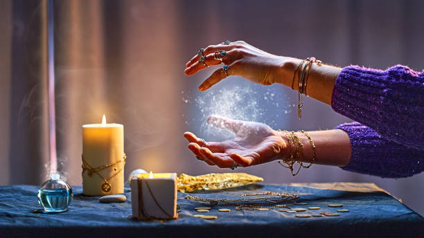

Quiénes Somos
Nuestra Historia y Propósito
Portal Místico y Ancestral nace como una comunidad espiritual comprometida con el cuidado, el acompañamiento y el bienestar de las personas que buscan orientación y equilibrio en su camino.
Nos inspiramos en la sabiduría ancestral de la santería, una tradición con profundas raíces africanas que ha sido transmitida de generación en generación y adaptada a lo largo del tiempo sin perder su esencia espiritual.
Nuestro propósito es servir como un puente entre el conocimiento ancestral y la vida actual, ofreciendo un espacio seguro, respetuoso y consciente para quienes buscan sanación, claridad y crecimiento espiritual.
Nuestros Valores
Creemos en el respeto, la honestidad y la responsabilidad espiritual. Cada orientación, ritual o lectura se realiza con ética, escucha y profundo cuidado por el bienestar emocional y espiritual de quienes confían en nosotros.
Aquí no se juzga ni se impone: acompañamos con humildad, comprensión y compromiso genuino con cada proceso personal.
Testimonios
Desde mi primera consulta en Portal Místico, mi vida comenzó a transformarse. Las limpias energéticas eliminaron bloqueos que llevaba años arrastrando y hoy puedo decir que he encontrado mi camino.
 María S.
María S.
Los rituales realizados por el equipo de Portal Místico fueron exactamente lo que necesitaba para conectar con mi propósito espiritual. Su conocimiento y dedicación son incomparables.
 Carlos M.
Carlos M.